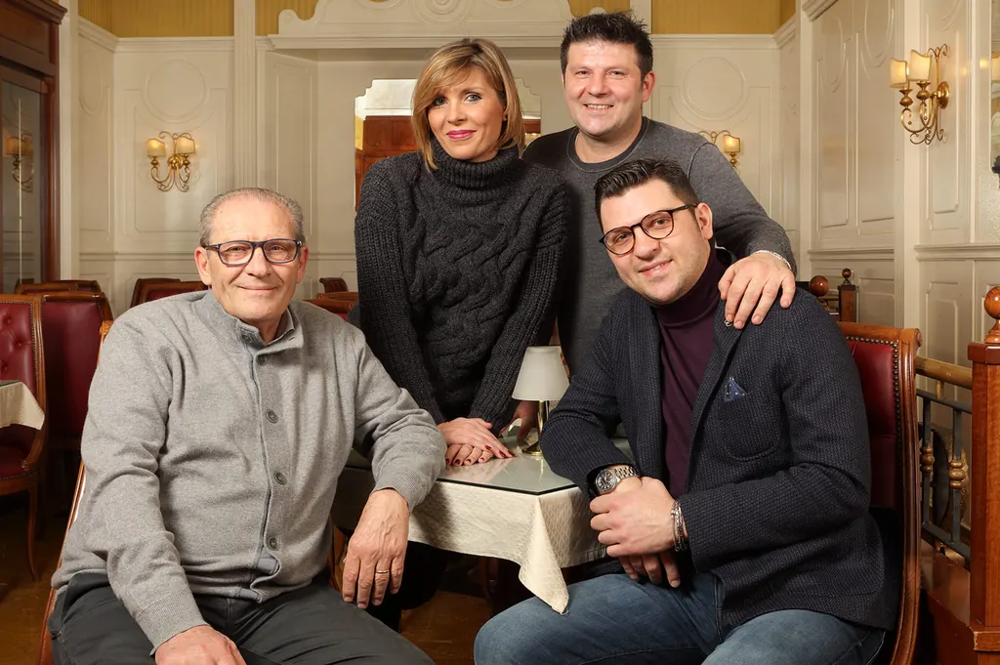
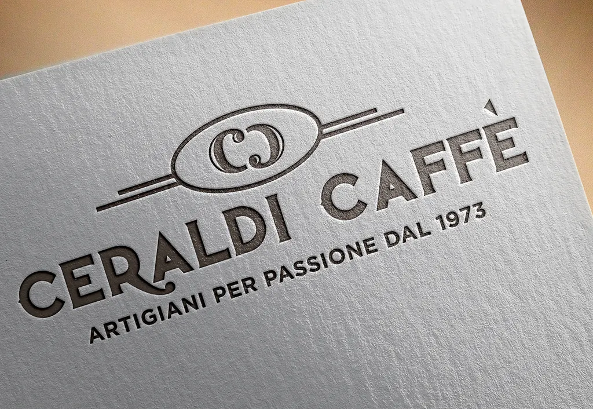

Naples, the early 1970s. In Piazza Garibaldi, in front of the station, the city arrives and leaves all day long: suitcases, trains, voices, car horns. This is where the Ceraldi family opens its first café. The trade is learned at the counter, one cup at a time, between people rushing to catch a train and people who have just arrived and want, before anything else, a proper coffee.
2002 and the empty corner
The years go by and the business grows. Then, one day in 2002, the founder is walking through the streets of the old centre without looking for anything in particular, and reaches the heart of the city: Piazza Carità. All around, the usual bustle of traders, office workers and passers-by, with the Pignasecca market calling from its stalls. His eye falls on an empty, lifeless corner.
Anyone else would have walked on. He didn't. That corner, he says, seemed to have been waiting for him all along. Since that day, Ceraldi Caffè has been at Piazza Carità 14.
From the first coffee to the last aperitivo
Ever since, the café's day has followed the rhythm of the square. Early in the morning come the office workers, only truly awake after the first sip. Then the tourists, map in hand and a little unsure. Then the people in no hurry at all. And in the evening, before heading home loaded with bags, papers and wonders, many stop for one last aperitivo. It is the happy ending of every day, and for us the sweetest.
A father and two sons
Today the tradition is carried on by the founder together with his two sons, Vincenzo and Valerio. Two generations of Neapolitan taste behind the same counter: one who learned the trade in Piazza Garibaldi, and those who grew up surrounded by the scents of the bakery.
Because that is where everything in the display case is born, in our own kitchens: sfogliatelle, babà, pastiere, cakes and savoury pastries, made with family recipes kept for over a hundred years. Recipes that are not written on a website, but held in the hands of the people who make them every morning.
Craftspeople by passion
Our motto is written in our logo: artigiani per passione, craftspeople by passion. It means doing things the way they were always done, even when there is a quicker way. It means coffee is served in a warm cup, a sfogliatella has to crunch, and whoever walks in should feel at home, even if they come from far away.
In 2019 we refreshed our logo and our tagline, «Artigiani per passione dal 1973» (craftspeople by passion since 1973): looking back at our past to build the future, without forgetting our roots, and sometimes simplifying and focusing on what matters.
That commitment has been noticed: for over ten years Ceraldi Caffè has been listed in the Gambero Rosso Bar d'Italia guide.
Come and see us in Piazza Carità: we write the rest of the story every day, at the counter.

